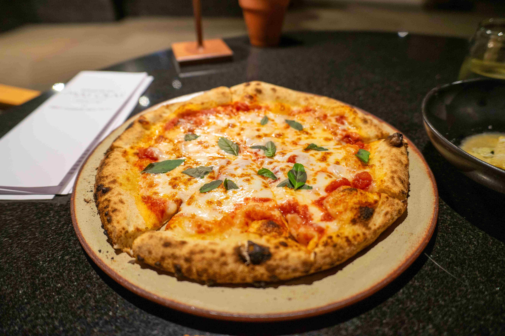

Pizza Margherita

Sestavine:
Testo:
- 500 g gladke moke (tip 00)
- 325 ml mlačne vode
- 10 g soli
- 3 g suhega kvasa
- 1 žlička sladkorja
- 1 žlica olivnega olja
Nadev:
- 200 ml pasiranega paradižnika (+ ščepec soli)
- 250 g sveže mocarele (odcejene in popivnane)
- Sveža bazilika
- Olivno olje
Postopek:
- Zamesite testo: V mlačni vodi raztopite kvas in sladkor. Zmešajte z moko, soljo ter olivnim oljem in gnetite 10 minut, da postane testo gladko.
- Vzhajanje: Testo pokrijte in pustite vzhajati na sobni temperaturi 1,5 do 2 uri.
- Segrevanje: Pečico skupaj s pekačem segrejte na najvišjo možno temperaturo (250 °C ali več).
- Oblikovanje: Vzhajano testo razdelite na dva dela. Vsakega z rokami nežno raztegnite od sredine navzven, da na robovih ostane malo debelejše.
- Nadev: Na testo premažite posoljen paradižnik, dodajte natrgano mocarelo in pokapajte z olivnim oljem.
- Peka: Pecite 7 do 10 minut, da se skorja zlato obarva, sir pa stopi. Pečeno pico takoj okrasite s svežo baziliko.